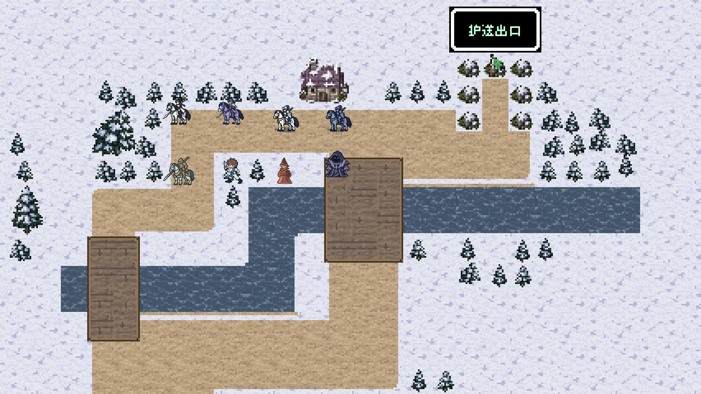
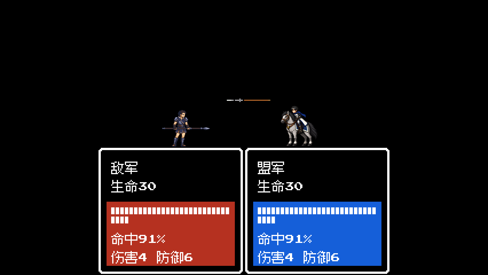
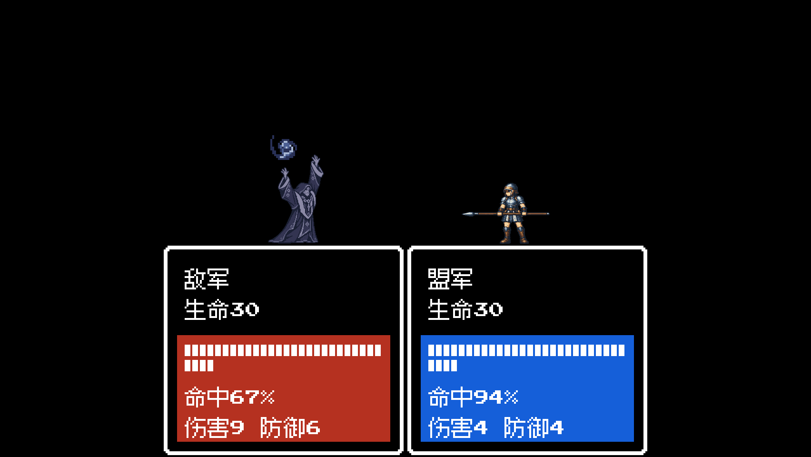
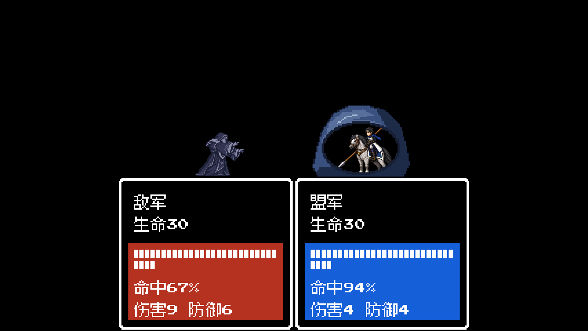
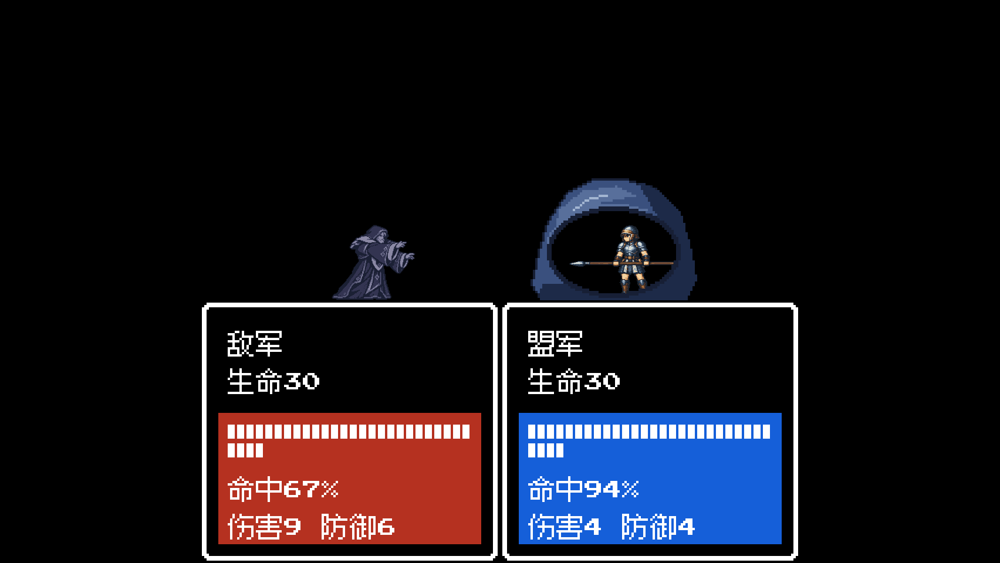

0.10.1 · 确认美术接入与本地测试
最近确认的骑兵、骑士、术法师、咒法师、大骑士和乡勇已接入源码及本地应用。包含战后回血、整备字体和五槽保存修复。本轮交付 .app，未制作压缩包。
16组地图动画6组战斗动画148条攻击程序183个身体帧槽339张效果图26张实际运行截图
骑士左右四阶段和乡勇侧向屈肘进入实际播放器；法术视觉收尾保留原命中帧与一次结算。史莱姆直接包覆实际防守角色，示例士兵图未导入游戏。下方为后台防抢焦点守卫捕获的实际画面，全部截图文字布局检查通过。

乡勇向左屈肘

友军投枪原色

敌方暗蓝火球蓄力

史莱姆 · 实际骑兵目标

史莱姆 · 实际士兵目标
地图循环与全部检查文件

全部26张截图及布局检查 · 截图尺寸和字节 · 素材导入清单 · 动作与物品／结算对应
源码和独立应用均通过动画选择、图像像素、一次结算与目标绑定检查；独立应用通过68项战后HP、23项五槽保存、48项装备预览检查。此为定向验证，未重新通关全部五章。原0.10.0应用保留，真实玩家存档未改动。